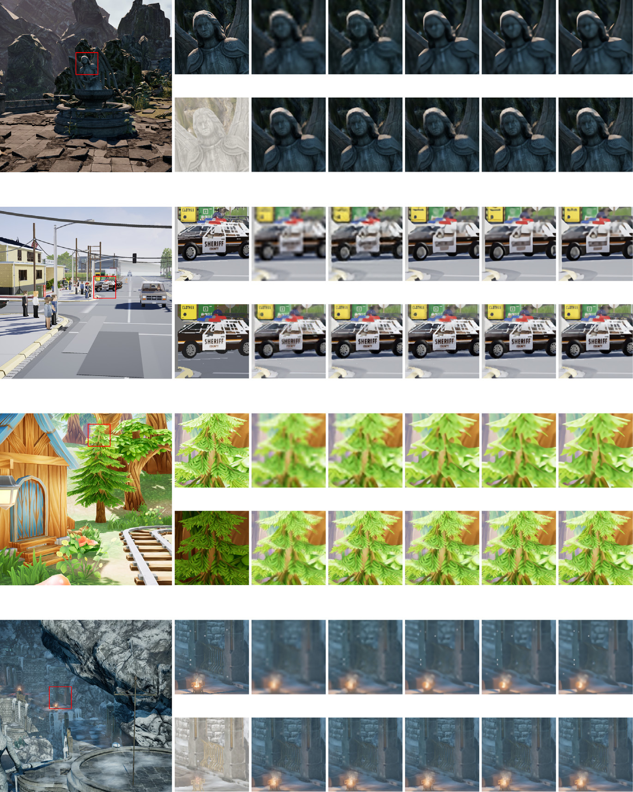

Array · Volume 32 · 2026 · Article 101324
G-buffer-guided feature modulation for lightweight rendered image super-resolution
Abstract
Super-resolution of rendered images offers a practical way to reduce shading cost in real-time graphics, but recovering high-frequency details from low-resolution color buffers remains difficult under strict latency and memory constraints. In modern 3D-rendering pipelines, auxiliary G-buffer data provide spatially aligned scene cues often unavailable in natural-image super-resolution, yet the best way to exploit this guidance remains insufficiently studied. This paper proposes a unified Guided Super-Resolution (GSR) framework for reconstructing high-resolution rendered RGB images from low-resolution RGB inputs and high-resolution albedo guidance. We use a common dual-branch multi-scale structure to evaluate three architecture families with different fusion mechanisms: convolutional fusion, shifted-window cross-attention, and feature-wise linear modulation (FiLM). To support this study, we introduce a public dataset of 11,000 paired rendered RGB and albedo images from diverse Unreal Engine environments. Under matched training, experiments show that our largest FiLM-guided model achieves the highest mean PSNR/SSIM across 2×, 3×, and 4× upscaling. A ×4 ablation shows that the complete auxiliary pathway improves every model.
Keywords
Guided super-resolution; rendered image reconstruction; G-buffer guidance; albedo guidance; feature modulation; lightweight networks.
Highlights
- Aligned RGB and albedo inputs guide super-resolution.
- The comparison covers convolution, attention, and FiLM.
- FGSR-L achieved the highest mean PSNR and SSIM across the three tested scales among the evaluated architectures.
- At 4×, FGSR-L exceeded SwinIR by 1.82 dB.
- The public dataset contains 11,000 RGB–albedo pairs.

